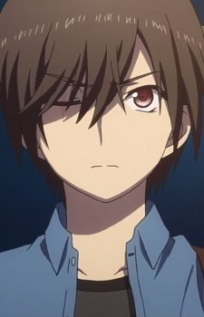

About the Characters

Ysuu Otosaka
A student who has the ability to temporarily possess other people. At first, he uses his power for personal gain, but later learns to help others and protect ability users.",
Previous
Next